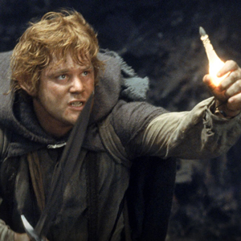
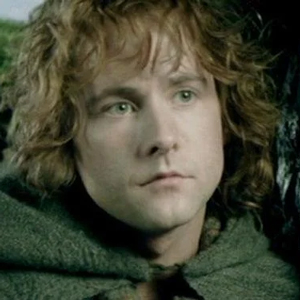

| Lord of the Rings Characters | ||||||||
|---|---|---|---|---|---|---|---|---|
| Character | Aliases | Race | Appearance | Fellowship Member | Alignment | Adventures | Ring Bearer | |
|
Smeagol | Gollum | Stoor Hobbit | A small slimy creature, emaciated and gaunt, but possessing a vicious, wiry strength. | No | Neutral Evil | The Fellowship of the Ring, The Two Towers, and The Return of the King, The Hobbit | Yes |
|
Frodo Baggins | Mr. Underhill | Hobbit | Half the height of humans, feet are covered with curly hair, and stout, with slightly pointed ears. | Yes | True Neutral | The Fellowship of the Ring, The Two Towers, and The Return of the King | Yes |
 |
Samwise Gamgee | Samwise the Brave | Hobbit | Half the height of humans, feet are covered with curly hair, and stout, with slightly pointed ears. | Yes | Lawful Good | The Fellowship of the Ring, The Two Towers, and The Return of the King | Yes |
|
Gandalf | Mithrandir, Tharkun, Olorin | Maia | Less tall than the others, grey-haired and grey-clad, leaning on a staff. | Yes | Chaotic Neutral | The Fellowship of the Ring, The Two Towers, and The Return of the King, The Hobbit | |
|
Aragorn | Strider, Elfstone | Men | Lean, dark and tall, shaggy dark hair flecked with grey. | Yes | Lawful Good | The Fellowship of the Ring, The Two Towers, and The Return of the King | No |
|
Legolas | Greenleaf | Sindar Elf | Lithe and slender, bright keen eyes, fair of face. | Yes | Neutral Good | The Fellowship of the Ring, The Two Towers, and The Return of the King | No |
|
Gimli | Elf Friend | Dwarf | Shorter and stockier than Elves and Men. | Yes | Chaotic Good | The Fellowship of the Ring, The Two Towers, and The Return of the King | No |
|
Meriadoc Brandybuck | Merry | Hobbit | Half the height of humans, curly hair on feet. | Yes | Chaotic Good | The Fellowship of the Ring, The Two Towers, and The Return of the King | No |
 |
Peregrin Took | Pippin | Hobbit | Half the height of humans, curly hair on feet. | Yes | Chaotic Good | The Fellowship of the Ring, The Two Towers, and The Return of the King | No |
|
Boromir | Captain of the White Tower | Men | Tall and sturdy, dark-haired and grey-eyed. | Yes | Chaotic Good | The Fellowship of the Ring, The Two Towers, and The Return of the King | No |
|
Sauron | Dark Lord of Mordor | Maiar | Many forms | No | Lawful Evil | The Fellowship of the Ring, The Two Towers, and The Return of the King, The Hobbit | Yes |
|
Saruman | Curunír, Sharkey | Maia | Long face, white hair and beard. | No | Neutral Evil | The Fellowship of the Ring, The Two Towers, and The Return of the King | No |
|
Bilbo Baggins | Burglar | Hobbit | Half the height of humans, curly hair on feet. | No | Chaotic Good | The Fellowship of the Ring, The Two Towers, and The Return of the King, The Hobbit | Yes |